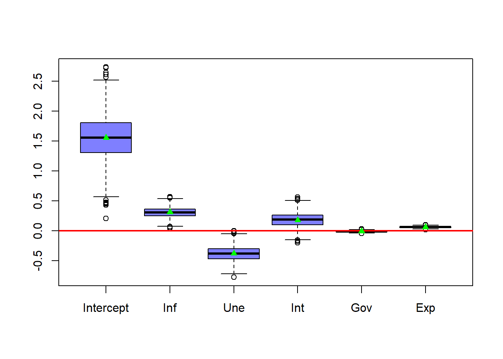
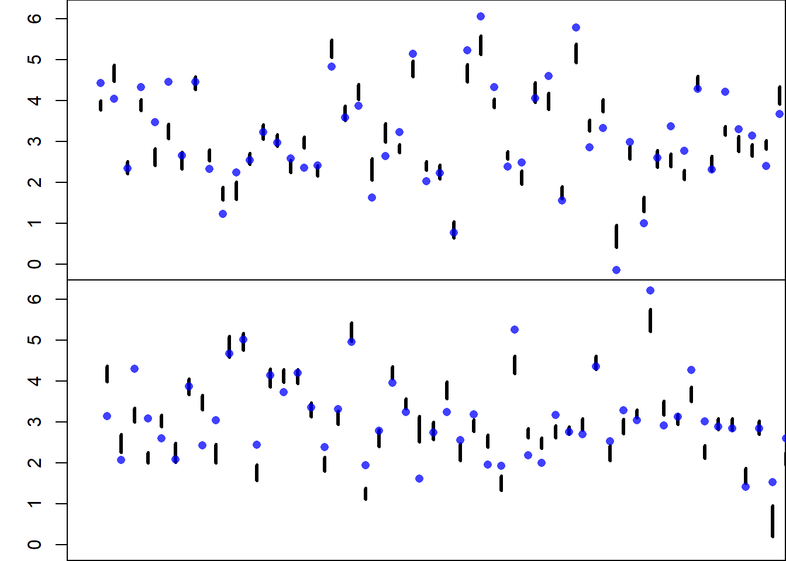
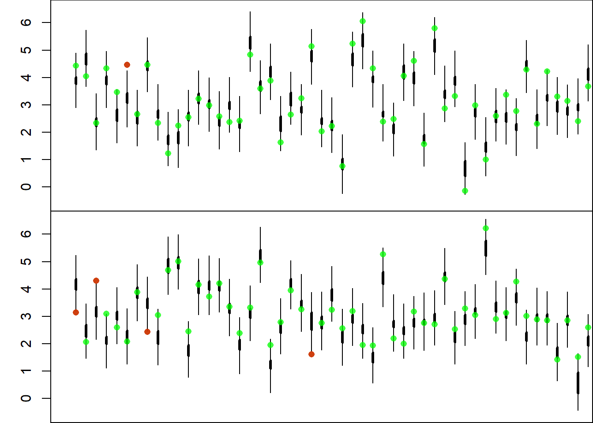

7 Bootstrapping
7.1 Introduction
Bootstrapping is a statistical technique that estimates the variability of a statistic by resampling data with replacement. It creates multiple simulated datasets (“bootstrap samples”) from the original data, allowing the construction of empirical distributions for estimates like means, medians, or regression coefficients. This method does not rely on assumptions about the data’s distribution, making it highly flexible and robust, especially with small sample sizes.
Key Points:
- Resampling with Replacement: Each bootstrap sample allows the same data point to appear multiple times.
- No Distribution Assumptions: Unlike traditional methods, bootstrapping is non-parametric.
- Estimates Uncertainty: Useful for computing confidence intervals and standard errors without strict assumptions.
Bootstrapping is a simple and powerful tool for inference, often applied when data is scarce or distributional assumptions are unclear.
7.2 Bootstrapping Example
So far we have been able to compute several estimates of interest:
\[ \hat{\boldsymbol{\beta}} \] \[ \hat{\mathbf{y}} \] \[ \hat{\mathbf{e}} \]
But they are point estimates. When we talked about influential observations and outliers, we saw what were some of the effects on the estimates when we removed observations. But this changes were very limited.
With bootstrapping we can add uncertainty to our estimates or any quantity of interest. Let’s see this with our GDP data.
# Data Load
dat <- read.csv(file = "Gdp data.csv")
# Assigns Values
X <- as.matrix(dat[, 2:6])
y <- as.numeric(dat$gdp)
# Number of Observations
n <- nrow(X)
# Design Matrix
X <- cbind(rep(1, n), X)
# Number of Variables
p <- ncol(X)
# Number of Bootstrapping Samples
m <- 1000
# Bootstrapping Coefficient Estimates
booCoe <- matrix(data = NA, nrow = m, ncol = p)
for(i in 1:m){
# Sample Selection
booSel <- sample(x = 1:n, size = n, replace = TRUE)
# Bootstrap Samples
Xb <- X[booSel, ]
yb <- y[booSel]
# Coefficient Estimation
booCoe[i, ] <- solve(t(Xb) %*% Xb, t(Xb) %*% yb)
}
# Plots the distribution for each coefficient
boxplot(booCoe,
col = rgb(0, 0, 1, 0.5),
xaxt = "n")
axis(side = 1, at = 1:6, labels = c("Intercept", "Inf", "Une", "Int", "Gov", "Exp"))
abline(h = 0,
col = rgb(1, 0, 0),
lwd = 2)
Here we can see that the intercept has a lot of uncertainty. While the coefficients corresponding to the inflation rate, unemployment rate and the interest rate have less variability and the government expenditure and exports have very little variability.
We see that even though the intercept is very variable is always positive. While the coefficients for inflation and unemployment have less variability but a couple of times change signs. The interest rate coefficient, while positive most of the time is negative sometimes. The government expenditure coefficients lands almost exactly at 0, with very little variability, while the coefficient for exports is small but always positive.
We can observe how the coefficient estimates are related:
# Data Frame
booCoeDf <- data.frame(booCoe)
colnames(booCoeDf) <- c("Intercept", "Inf", "Une", "Int", "Gov", "Exp")
pairs(booCoeDf)Here we can observe that the coefficients for inflation, unemployment and interest rate are very correlated. While government expenditure and exports are almost independent of the other variables.
This type of analysis is not limited to the coefficients, it can also be applied to the predictions (in and out of sample).
For example, we can compare the estimates and the observed values for GDP. We can compute 95% bootstrap confidence intervals for the estimates and analyze for which observations the linear model is a good fit, and for which it isn’t.
# Mean Estimates
yh <- booCoe %*% t(X)
# Bootstrap Prediction Quantiles 2.5% and 97.5%
booConQua <- apply(X = yh, MARGIN = 2, FUN = quantile, probs = c(0.025, 0.975))
# Plots the Intervals and Observations
# Number of Plots
numPlo <- 2
ymin <- min(y, booConQua)
ymax <- max(y, booConQua)
xmin <- 0
xmax <- n / numPlo
xSet <- matrix(data = 1:n, nrow = numPlo, ncol = n / numPlo)
# Bootstrap Confidence Intervals Plot
par(mfrow = c(numPlo, 1))
par(mar = c(0, 3, 0, 0))
for(i in 1:numPlo){
plot(NULL,
xlim = c(xmin, xmax),
ylim = c(ymin, ymax),
ylab = "GDP % Growth",
xlab = "Countries",
xaxt = "n")
segments(x0 = xSet[i, ],
x1 = xSet[i, ],
y0 = booConQua[1, xSet[i, ]],
y1 = booConQua[2, xSet[i, ]],
lwd = 3)
points(x = xSet[i, ],
y = y[xSet[i, ]],
pch = 16,
col = rgb(1, 0, 0, 0.75))
}
# Coverage of the Bootstrap Confidence Intervals
print(paste0("Bootstrap Confidence Intervals Coverage = ", round(mean((y > booConQua[1, ]) & (y < booConQua[2, ])) * 100, 2) ))## [1] "Bootstrap Confidence Intervals Coverage = 27.04"As we can see, the mean estimate confidence intervals of the observations do not cover 95% of the observed values. This is because we are only estimating the mean value (the place where the line is) and not where the observations could be, that is it is not accounting for possible errors.
We can include this uncertainty component by adding the bootstrapping errors.
Since, we have made no assumptions about the errors, we can assume now that the errors will behave the same way for all observations, so we can create bootstrap errors and add them to our bootstrap mean estimates to create prediction intervals.
### Error Bootstrapping Samples
eh <- t(t(yh) - y)
### Then we re-sample the errors
eh <- eh[sample(x = 1:(m * n), size = m * n, replace = FALSE)]
# Adds the resampled errors to the bootstrap observations sample
yp <- yh + eh
# Bootstrap Prediction Quantiles 2.5% and 97.5%
booPreQua <- apply(X = yp, MARGIN = 2, FUN = quantile, probs = c(0.025, 0.975))
# Plots the Intervals and Observations
# Number of Plots
numPlo <- 2
ymin <- min(y, booPreQua)
ymax <- max(y, booPreQua)
xmin <- 0
xmax <- n / numPlo
xSet <- matrix(data = 1:n, nrow = numPlo, ncol = n / numPlo)
# Non-Covered Observations
nonCov <- ((y > booPreQua[1, ]) & (y < booPreQua[2, ]))
# Bootstrap Confidence Intervals Plot
par(mfrow = c(numPlo, 1))
par(mar = c(0, 3, 0, 0))
for(i in 1:numPlo){
plot(NULL,
xlim = c(xmin, xmax),
ylim = c(ymin, ymax),
ylab = "GDP % Growth",
xlab = "Countries",
xaxt = "n")
segments(x0 = xSet[i, ] - (i - 1),
x1 = xSet[i, ] - (i - 1),
y0 = booConQua[1, xSet[i, ]],
y1 = booConQua[2, xSet[i, ]],
lwd = 3)
segments(x0 = xSet[i, ] - (i - 1),
x1 = xSet[i, ] - (i - 1),
y0 = booPreQua[1, xSet[i, ]],
y1 = booPreQua[2, xSet[i, ]],
lwd = 1)
points(x = xSet[i, ] - (i - 1),
y = y[xSet[i, ]],
pch = 16,
col = rgb(1, 0, 0, 0.75))
points(x = xSet[i, ][!nonCov[xSet[i, ]]] - (i - 1),
y = y[xSet[i, ][!nonCov[xSet[i, ]]]],
pch = 1,
col = rgb(0, 0, 1, 0.75))
}
# Coverage of the Bootstrap Confidence Intervals
print(paste0("Bootstrap Predictive Intervals Coverage = ", round(mean((y > booPreQua[1, ]) & (y < booPreQua[2, ])) * 100, 2) ))## [1] "Bootstrap Predictive Intervals Coverage = 95.41"In the figure the thin intervals represent the 95% predictive intervals and the thick intervals the 95% mean confidence intervals.
Notice here that the coverage of the Predictive Intervals is much closer to 95%.
Also, notice that if you run this code in your computer the results will be slightly different, since this results depend on the random sampling used to create the bootstrap samples.